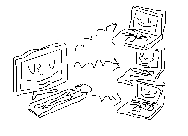

A printable digital zine designed to help artists with absolutely no programming or website building experience make, host and maintain their own personal portfolio websites.
Why make your own website? Maybe you don't want to pay for SquareSpace, maybe you don't like Instagram's algorithm, maybe you just want to have more direct control over how your work looks online, maybe you just want to know how to make your own website and check out a little light programming.
In any case it's a fun empowering project to take on!
What's GitHub? It's a free platform for hosting collaborative programming projects that's used by almost every modern programmer and web developer. They also offer free website hosting to showcase projects, which we can use to host our artist's website.
Just go to http://www.github.com and create a new account!
In GitHub speak, we call projects reposatories. Look around for the link to create a new reposatory and give it a click. You'll be asked to create a name, which could just be your name or "portfolio-website", just use dashes instead of spaces. Regardless the name is totally up to you!
Find and click the link to create a new file. You'll want to name it index.html. Basically this tells the computer that it should display this as a webpage.
Now paste the following in the new file:
This is HTML (Hyper Text Markup Language), it's hideous because it was invented in the early 1990's! But the good news is that it's simple once you get used to looking at it.
The purpose of HTML is to tell web browsers how to format text, images etc. For instance when we see <h1>Welcome to my Portfolio Website!</h1> the h1 tells a web browser that we want this text to be formatted as a title. We call these things html tags or in this case an h1 tag.
When we want to save changes to a file on GitHub, we do something called committing. Just think of it as committing the changes you've made to a file or a bunch of files.
Down towards the bottom of the page click the button that says Commit changes or Commit new file. This will save everything you've done!
Now let's make this a real life website! Go to the settings section of your project and find the GitHub Pages section down towards the bottom. Now click the dropdown that says none and select master. Then click save to the right. When the page reloads if you scroll back down to that section there should be a live clickable link.
If you try to click this link right now you might get a dead page, it might take a little while after first turning this on. The internet pipes can be slow and creaky. But after a few minutes it should work and now any committed updates you make should be pretty close to instantaneous.
In any case, congratulations! This is now your personal website! Anyone on the internet can access this url and it will update any time you save (commit) new images and text.
Of course you probably want to use a custom url like www.yourname.com, that's a seperate process but don't worry it's pretty simple and you can do it after you finish your website.
You can always find the link address to your website here in the settings, but you might want to copy it and keep it somewhere just to save yourself the time.
Now click around until you get back to the root page for our project (reposatory) where we can see a link to our index.html file that we created a while ago.
Once we're here you should see a dropdown button that says Add file. Select the upload files option and upload an image from your computer. Now click choose your file and select a picture file from your computer. Any picture will do, this can just a place holder that you'll probably change later.
Once the file is done uploading click the Commit changes button again.
Now let's add a reference to that image to your actual website so it appears with your text.
Go back to the main page for your project, you should be able to click your index.html file. After doing this you should be able to see all the HTML we pasted in there before.
Find and click the pencil icon, this will allow you to edit the HTML file and should be towards the top right of the area where the HTML appears.
Now you should be able to edit all this HTML freely. Update your index.html file so that it includes a <img src="your-files-name.jpg"> line that looks like this:
In the <img src="your-files-name.jpg"> make sure the full image file name in the quote matches how the file name appears on GitHub, including the .jpg which might be .png or something else depending on the file you uploaded. The <style> section we've added is for controlling the style of our text, images etc. In this case we're doing just what it looks like we're doing, making all our images 500 pixels wide. This is referred to as CSS rather than HTML, but we'll get into that more later.
The <img> is referred to as an image tag with src being short for image source. The <p> is referred to as a paragraph tag, which translates to regular sized text.
Now confirm that it's working ok by loading your website's link in another tab. You might have to wait a minute or two and reload the page a couple times before the site updates. Remember you can always find your website link again under the GitHub Pages section under Settings.
You may want to have seperate pages for your cv / resume or different bodies of work etc. To do this all you have to do is add another .html file in your project!
Back on the main GitHub page for this project click the Add file dropdown again and select Create new file. You can name it page-two.html for now in the space where it says Name your file.... Now you can paste this starter template again and populate it however you want!
Now click the Commit new file button at the bottom of the page once again. You might notice that this page doesn't seem to be accessible on your actual website once it updates. It exists but we need to create a link to it in the next step!
Side note, notice that you can re-use that same image from before, welcome to the magic of web development!
Now let's add a link on our index.html page that will go to the new page we just made. Go back to your main project page, click on index.html and update your HTML to look something like this:
As always click the Commit changes button towards the bottom of the page, wait a minute or two and check out what your page looks like now!
As a bonus see if you can successfully add a link back to your home page somewhere on your second page. It should look something like this:
Hit the Commit changes button as always, give it a few minutes to update and then check it out. You should be able to go back and forth between pages now!
Before wrapping this little demo page let's add a little bit more CSS in the style section of our index.html and second-page.html pages. Check out how your page looks if you update your pages to look like this.
Note that we added some stuff to the top of the files in meta tags. Don't worry about these, they're just standard additions to make styling consistent on different machines. Also note that some things like our h1 tags and p tags have been condensed to one line, this optional in HTML and shouldn't change anything visually.
At this point you've built the major components you'll need for a fully functional gallery or artist's website. You can start playing around with adding new images, new pages and new links until it starts to look like a real website!
To learn more about HTML and CSS styling I'd recommend going through the two tutorials below step-by-step. They're super interactive and will walk you through from no prior experience to highly proficient very efficiently.
Also, never be afraid to peruse youtube or google any questions you have verbatim. There is an ocean of extremely helpful content out there and any question you have someone else has found an answer for and put it out there. From "How do I center text with CSS?" to "How do I make a link to a PDF with HTML?".
Just to be clear this part is optional, you now have a fully working website. Your working website link is available in settings under the GitHub pages section. You can email this to people, link it on an instagram account and use it anywhere a normal website url can be used.
Also, there is no way to make this part free, website names are regulated and somebody has to pay for them. Right now GitHub is technically paying for your website name. But they don't mind, they're happy to have you on there.
If you do want a custom website name it's worthy of seperate walkthrough but here's the short version:
This is tricky and it's different on different Registrars. On top of this any changes can take hours to update! Don't fear it, you can't really break anything and google / youtube are your friend if you hit a wall!